06 / Mechanical · Ventilation & thermal analysis
Steam Bath Ventilation Improvement
A steam-bath improvement project focused on eliminating hot spots, improving air distribution, and lowering the room’s average temperature. I combined on-site thermal imaging, CAD modeling, and transient airflow simulations to evaluate ventilation changes.

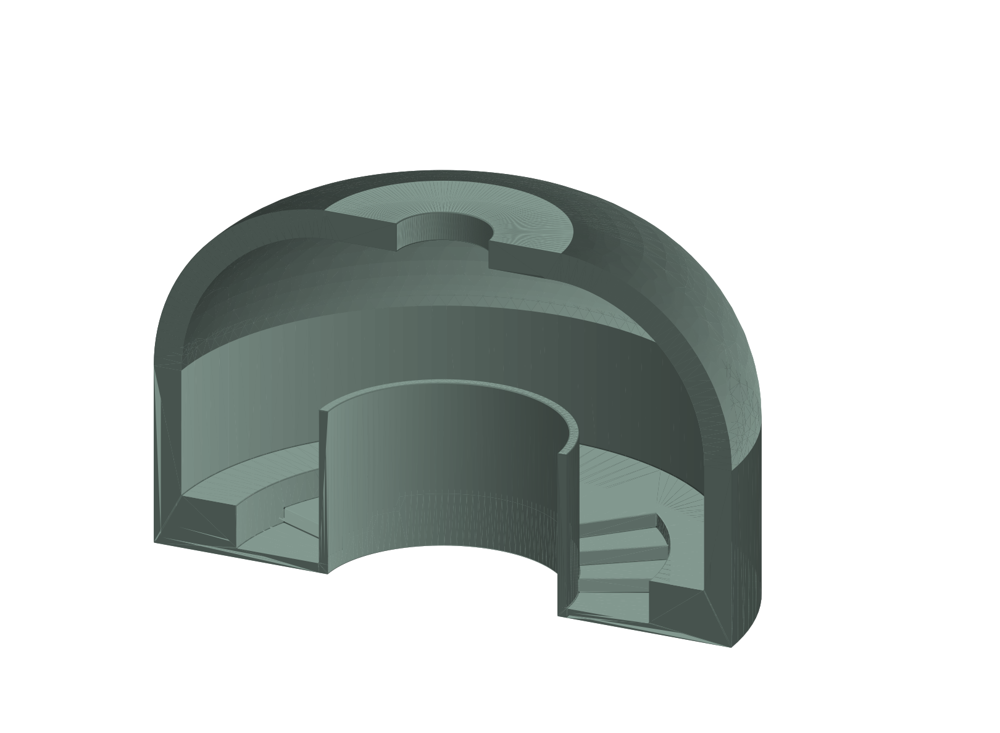

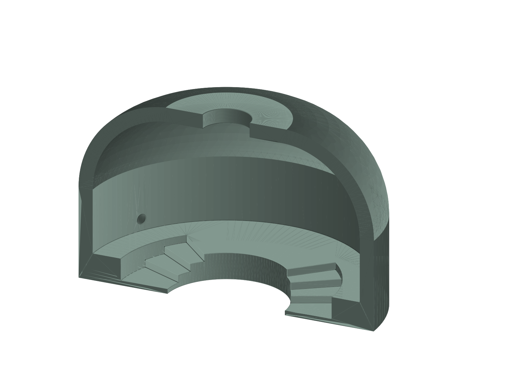
- Ventilation designs compared
- 6
- A matched five-minute comparison, followed by a ten-second door test for each design.
- Lower simulated room average
- 3.95 °C
- Case 2 versus the existing arrangement after five minutes with the door closed.
- Lower peak recorded door-outflow temperature
- 6.9 °C
- Case 2 versus Case 1; mass-flow-weighted outflow through the upper half of the door.
Select any figure to enlarge it. Results are numerical design comparisons under the conditions described below.
01 / Understanding the problem
Site investigation
I visited the steam bath, examined the internal arrangement, and took thermal images. The site investigation identified a distinct separation between the cooler lower region and the hotter region above the central cylinder. Opening the door brought very hot steam toward my face while cooler air entered below.
This set the objectives: eliminate persistent hot spots, distribute air more evenly through the occupied space, and lower the room’s average temperature. I also checked how each change affected hot air escaping at the doorway. The designs were compared under shared operating conditions, without specifying a numerical target temperature.
The thermal images below are four of the sixteen recorded on site. They document the observed thermal pattern and the cylinder geometry. Their individual colour scales are preserved; they were used as qualitative field evidence rather than as a numerical calibration of the airflow model.

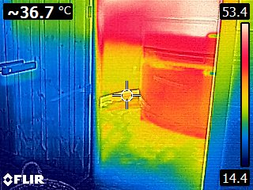

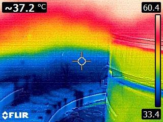

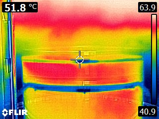

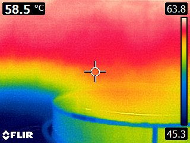
The displayed spot temperatures and colour ranges belong to each camera image. They are not measurements of the room’s volume-weighted air temperature.
02 / Geometry and preparation
CAD models
I used the STEP geometry to define the domed concrete shell, stepped floor, seating, central steam opening, and roof outlet. The original shell spans approximately 6.30 m across and 3.90 m in height. The internal steps and raised floor remain part of the model because they affect both the air volume and the placement of openings.
The final comparison represents the existing central cylinder as 1.75 m high, with a 2.50 m clear internal diameter and 0.10 m wall thickness. The roof opening is 1.00 m in diameter. Cases with and without the cylinder allow its influence to be separated from the effect of adding ventilation.
The side vents are spaced at 30°, 150°, and 270° from the +X axis. Most configurations place their centres at Z = 0.80 m; one moves them to Z = 1.50 m. These are CAD coordinates: Z = 0 is the water-surface datum, 0.10 m below the lower floor surface. The raised floor is at Z = 0.56 m, so there is no single floor-relative height throughout the room.

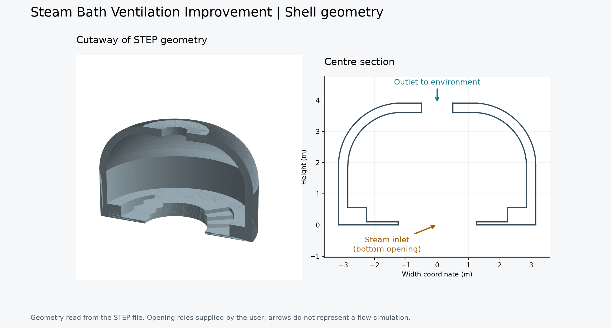


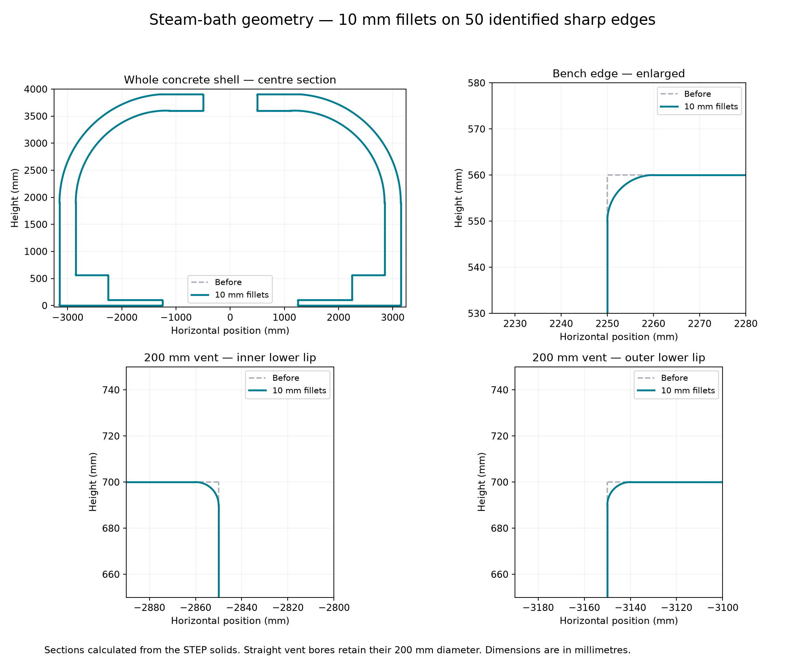
From solid geometry to a fluid domain
I prepared separate concrete and air domains, applied 10 mm fillets to the physical sharp edges, and extended the air domain beyond the vent and roof openings. These exterior regions move the pressure boundaries away from the opening lips, allowing local mixing before air reaches the boundary.
The accepted Case 2 mesh contains 246,179 cells. I checked domain connectivity, opening areas, the water-source boundary, and the narrow vent passages. Measured mesh sections through the three nominal 200 mm bores were approximately 199.9 mm across, with cross-sectional areas within 0.73% of the CAD values.
These checks verify that the mesh represents the intended passages. They do not establish mesh-independent flow predictions; the study’s conclusions remain comparative results from the accepted meshes.
03 / Physics and numerical methods
Simulation setup
The model is three-dimensional and time dependent. I used OpenFOAM v2412 with the k–ω SST turbulence model, then extended the solver to represent the steam source, moisture transport, condensation, and the thermal response of the concrete.
Steam enters as a mass source near the water surface. The source is included in the mass, vapour, and energy calculations. The condensation model relaxes excess vapour toward saturation, removes condensed water from the air, and accounts for the associated thermal exchange. This connects the airflow calculation to the heat stored in the structure.
The shell uses independent 0.30 m concrete slabs, each divided into six thermal layers. The central cylinder uses a two-sided, six-layer model across its 0.10 m thickness. This captures heat exchange through the thickness; conduction along the cylinder’s height or into the floor is not included.
Scroll horizontally to see every column.
| Input | Value used in the model |
|---|---|
| Steam source | 100 kg/h of pure water vapour at 100°C; assumed, not measured |
| Initial state | Air and concrete at 35°C; initial air at 100% relative humidity |
| Outdoor air | 7.4°C, 85% relative humidity, no wind |
| Water surface | Fixed at 100°C |
| Concrete properties | Conductivity 1.4 W/(m·K); density 2,300 kg/m³; specific heat 880 J/(kg·K) |
| External heat transfer | Fixed coefficient of 25 W/(m²·K); assumed, not measured |
| Condensation | 0.05 s relaxation toward saturation |
| Closed-door cases | Maximum time step 0.02 s; maximum Courant number 2 |
| Door-opening cases | Maximum time step 0.005 s; maximum Courant number 0.8 |
Outdoor conditions use the September weather basis in the report. All comparison runs use eight parallel processes.
Boundary conditions and saved states
Free openings allow air to move in either direction. Incoming air carries the specified outdoor temperature and humidity; outgoing air carries the local internal conditions. The exterior air regions can warm and mix rather than remaining fixed at outdoor temperature everywhere.
The fan case prescribes 1,000 m³/h of extraction through a 400 mm outlet, with a free path around the fan. It does not use a fan performance curve. Visitors, changing weather, grilles, and leakage around the closed door are outside this comparison.
I saved the fluid fields and concrete-layer temperatures so that each door-opening test could continue from its own five-minute state. Preserving that stored thermal energy matters: resetting the concrete would change the transient being compared.
04 / Controlled design comparison
Six ventilation designs
I compared six configurations with the same initial temperatures, steam source, and outdoor conditions. Cases 1, 3, 4, 5, and 6 run for 300 simulated seconds. Case 2 uses the corresponding part of its existing thirty-minute run; its saved field is at 300.25 s.
Comparing Cases 1 and 6 tests the addition of vents while keeping the cylinder. Comparing Cases 6 and 2 tests cylinder removal with the same vent arrangement. Cases 3, 4, and 5 then examine vent diameter, forced extraction, and vent height relative to Case 2. Geometry changes require different meshes, which remains a source of numerical uncertainty.
Scroll horizontally to see every column.
| Case | Central cylinder | Side vents | Roof arrangement |
|---|---|---|---|
| 1 · Existing | Retained | No new side vents | Free opening |
| 2 · Recommended | Removed | 3 × 200 mm at Z = 0.80 m | Free opening |
| 3 · Smaller vents | Removed | 3 × 125 mm at Z = 0.80 m | Free opening |
| 4 · Fan extraction | Removed | 3 × 200 mm at Z = 0.80 m | 1,000 m³/h fan + free opening around it |
| 5 · Higher vents | Removed | 3 × 200 mm at Z = 1.50 m | Free opening |
| 6 · Cylinder + vents | Retained | 3 × 200 mm at Z = 0.80 m | Free opening |
Three 200 mm vents provide 0.09425 m² of total nominal area; three 125 mm vents provide 0.03682 m². The same case numbers are used throughout this page.
05 / Temperature and ventilation
Thermal results
The first result is the room’s volume-weighted mean air temperature. Each cell contributes according to its own air volume, so larger cells carry proportionally more weight. Concrete, water, and the exterior air regions are excluded. The room contains approximately 73.15 m³ of air with the cylinder and 74.38 m³ without it.
After five minutes, Case 2 reaches 43.55°C, compared with 47.50°C for the existing arrangement. Its temperature profile is also more even through most of the room. The smaller 125 mm vents in Case 3 produce the highest room average, 48.12°C.
The fan in Case 4 gives essentially the same result as natural ventilation in Case 2: 43.57°C versus 43.55°C. Moving the vents higher gives 43.97°C. These small differences do not demonstrate a clear benefit over the simpler Case 2 arrangement.

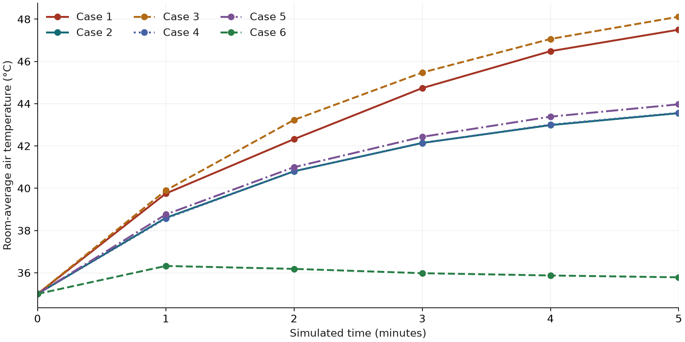
Scroll horizontally to see every column.
| Case | Room average (°C) | Net side inflow (m³/h) | Net roof outflow (m³/h) |
|---|---|---|---|
| 1 | 47.50 | 0 | 149 |
| 2 | 43.55 | 819 | 1025 |
| 3 | 48.12 | 341 | 489 |
| 4 | 43.57 | 814 | 1026 |
| 5 | 43.97 | 732 | 936 |
| 6 | 35.78 | 737 | 945 |
Flows are instantaneous net values near 300 s at local temperature and density. Case 4’s roof value combines fan flow and the free path. Room temperatures use the saved fields; Case 2 is at 300.25 s.
Why the lowest average is not the best result
Case 6 has the lowest room average, 35.78°C, but it retains a pronounced hot upper layer above much colder lower air. The cylinder still separates the regions. Choosing a design by its room average alone would miss that uneven distribution.
I therefore calculated a second set of results: volume-weighted temperatures in every 0.10 m height band from Z = 0 to 4.00 m. Each band covers all the room air at that height, including air near the steam source. These profiles show the more uniform distribution in Case 2 and the strong separation in Case 6.
The 10 cm intervals describe how the results are grouped, not the established spatial accuracy of the simulation. A band average can still contain a local hot plume or cold inlet stream. The profiles and spatial sections need to be read together.

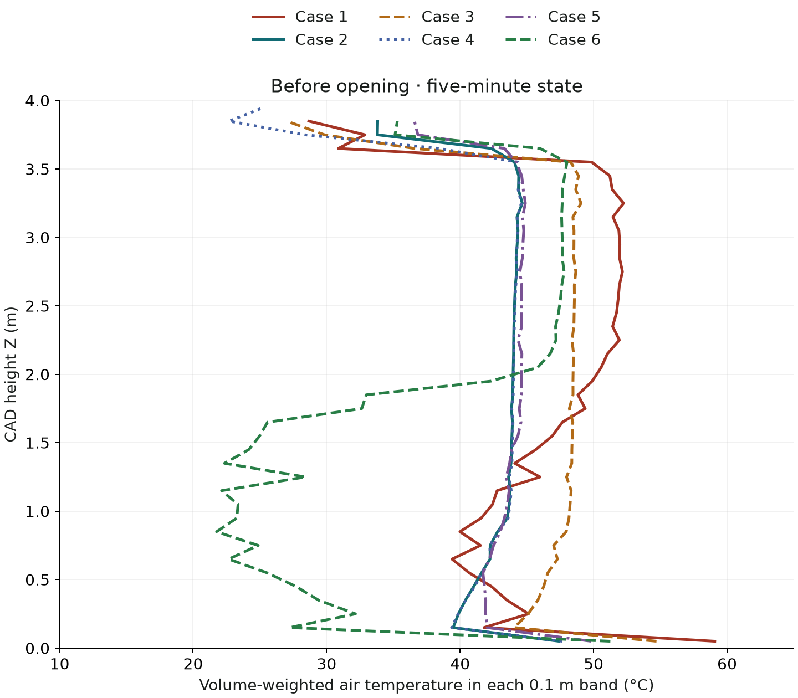

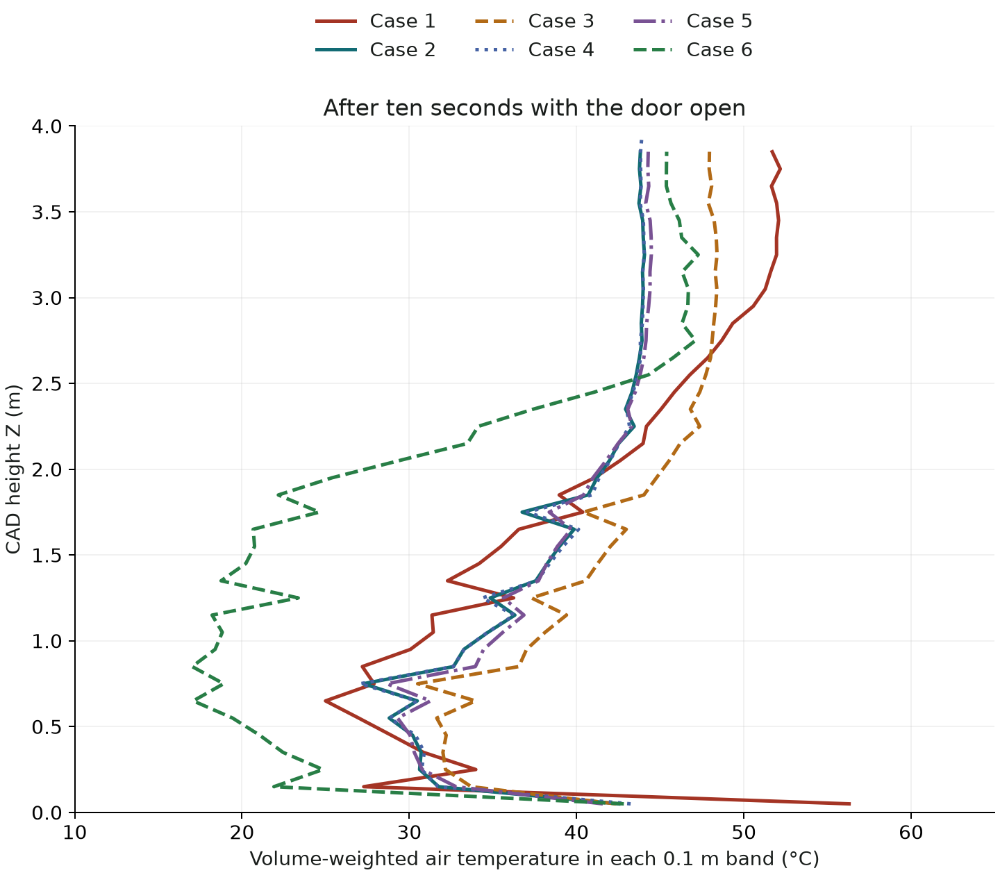

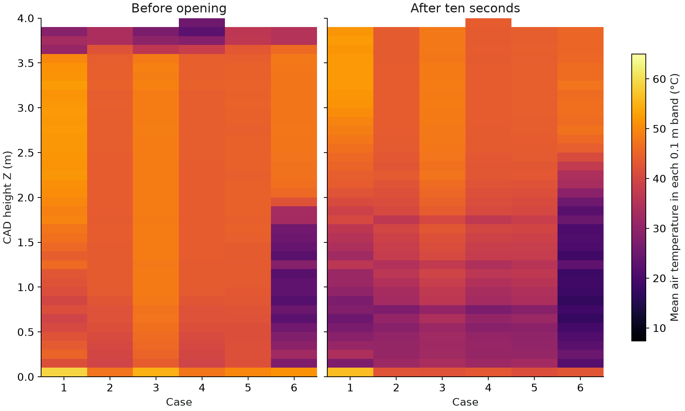
06 / Spatial results
CFD temperature sections
These five-plane temperature figures show all six designs from the final report, rendered from the saved simulation fields with English labels. Each figure shows two vertical centre sections, X = 0 and Y = 0, followed by horizontal sections at Z = 0.80, 1.50, and 2.50 m.
All six use the same 5–100°C colour scale and show saved states at approximately five minutes with the door closed. Colours represent interpolated CFD air temperatures; grey marks concrete or areas outside the air model. Select a figure to inspect the full-size temperature sections and legend.
Case 1
Existing arrangement

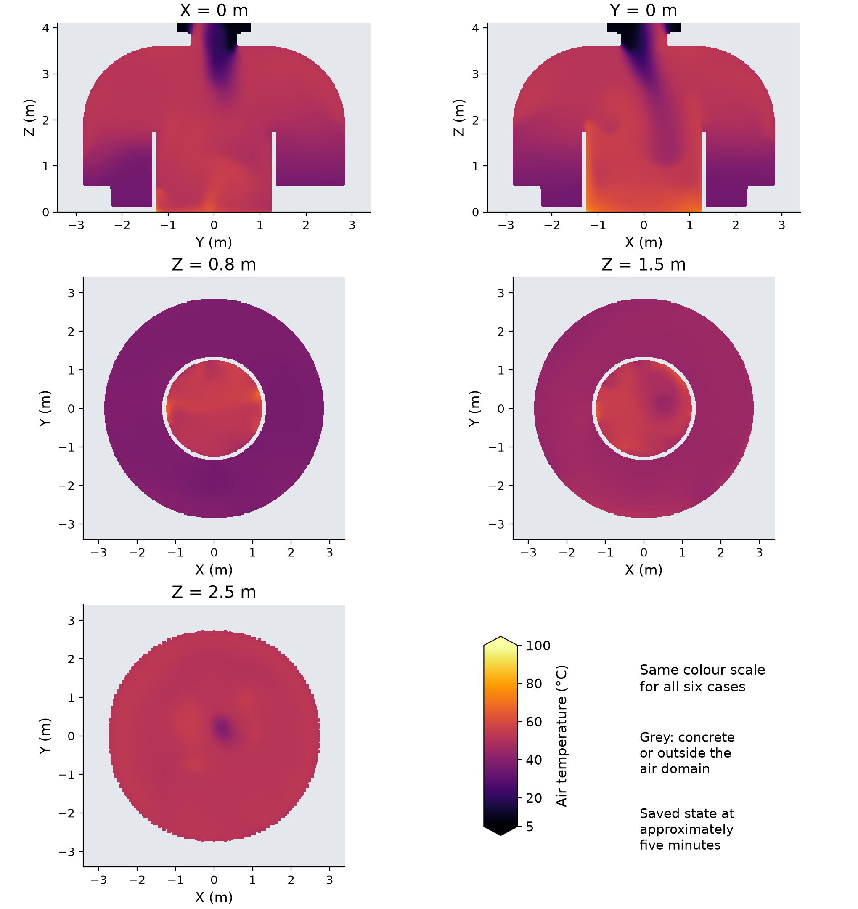
The cylinder confines the rising hot region and the upper space becomes warmer than the lower occupied region.
Case 2
Cylinder removed, 200 mm vents

Cold streams enter through the low-level openings, with a more even temperature across the bulk of the room.
Case 3
Cylinder removed, 125 mm vents

The smaller passages leave the room warmer than the 200 mm configuration.
Case 4
200 mm vents with extraction fan

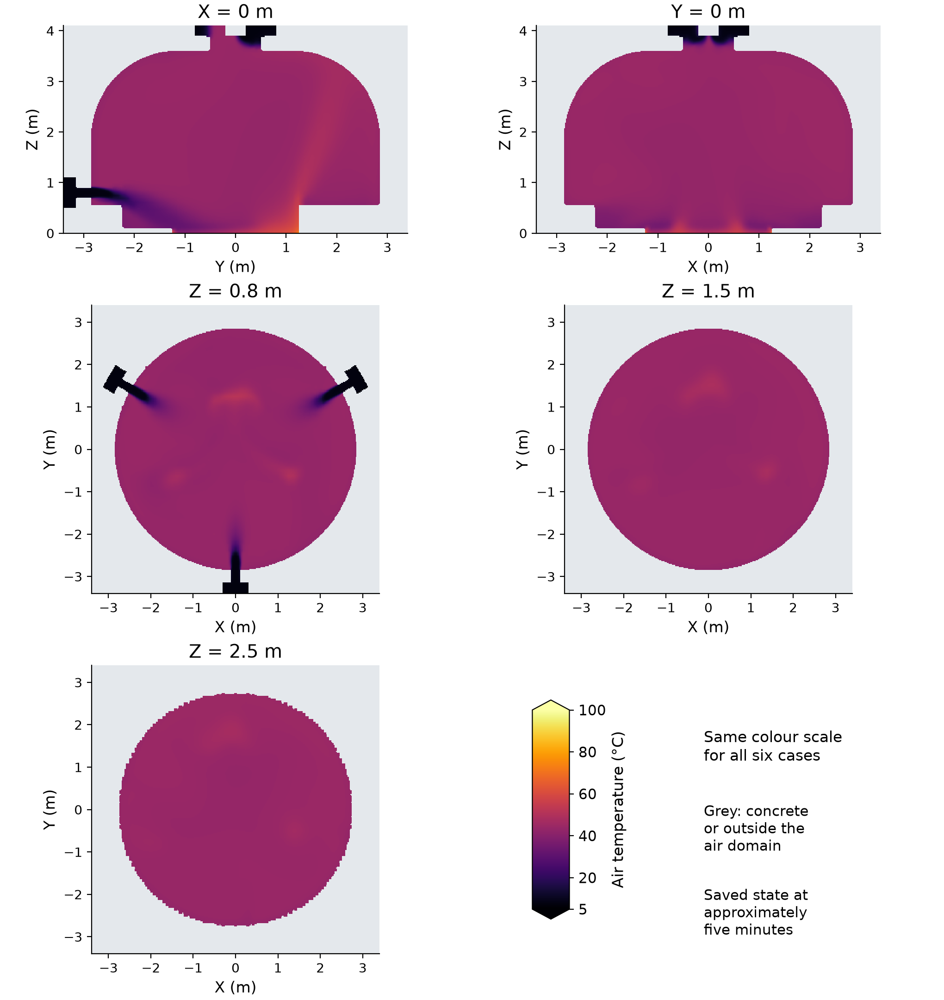
The overall field is close to Case 2 under these conditions; the fan does not establish an additional cooling benefit.
Case 5
200 mm vents at Z = 1.50 m

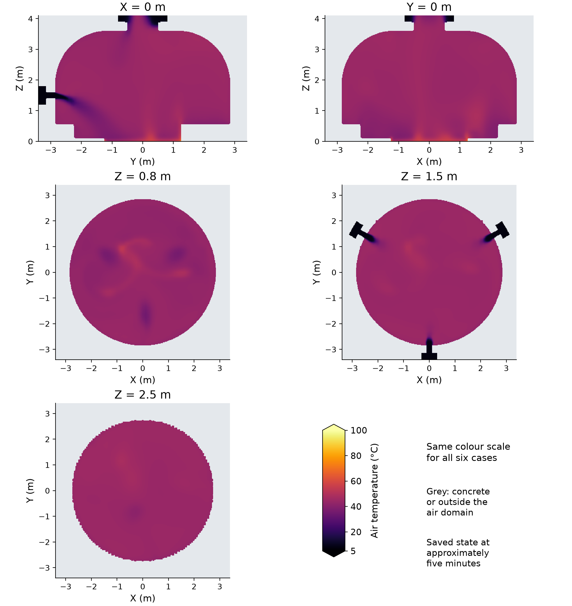
Moving the vents changes the inlet locations, but gives no clear overall advantage over the low-level arrangement.
Case 6
Cylinder retained, 200 mm vents

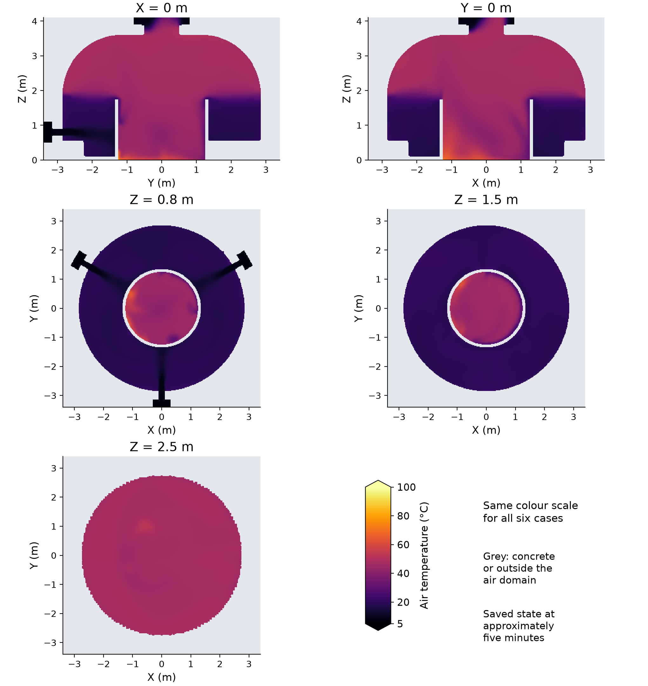
Cool air occupies much of the lower region while the upper air stays hot, explaining the low mean and uneven profile.
07 / Transient ventilation
Door-opening tests
The site visit made doorway behaviour a separate design question. I extended each saved five-minute case with a full door opening lasting ten seconds, keeping its ventilation arrangement and steam source unchanged.
The modeled opening is 0.80 m wide and 2.00 m high, on the +Y wall above the raised floor. Its sill is at Z = 0.56 m and nominal top at Z = 2.56 m. It opens directly to the specified 7.4°C outdoor air. The opening follows faces on the curved inner-wall mesh; its projected area is approximately 1.591 m² against a nominal 1.600 m².
Cells near the lower doorway were locally refined. Internal flow variables inherited the saved parent-cell values, and concrete temperatures were mapped to the new wall faces. The restart checks accounted for the concrete wall area removed by the opening, preserving the remaining thermal state instead of starting the structure again at 35°C.

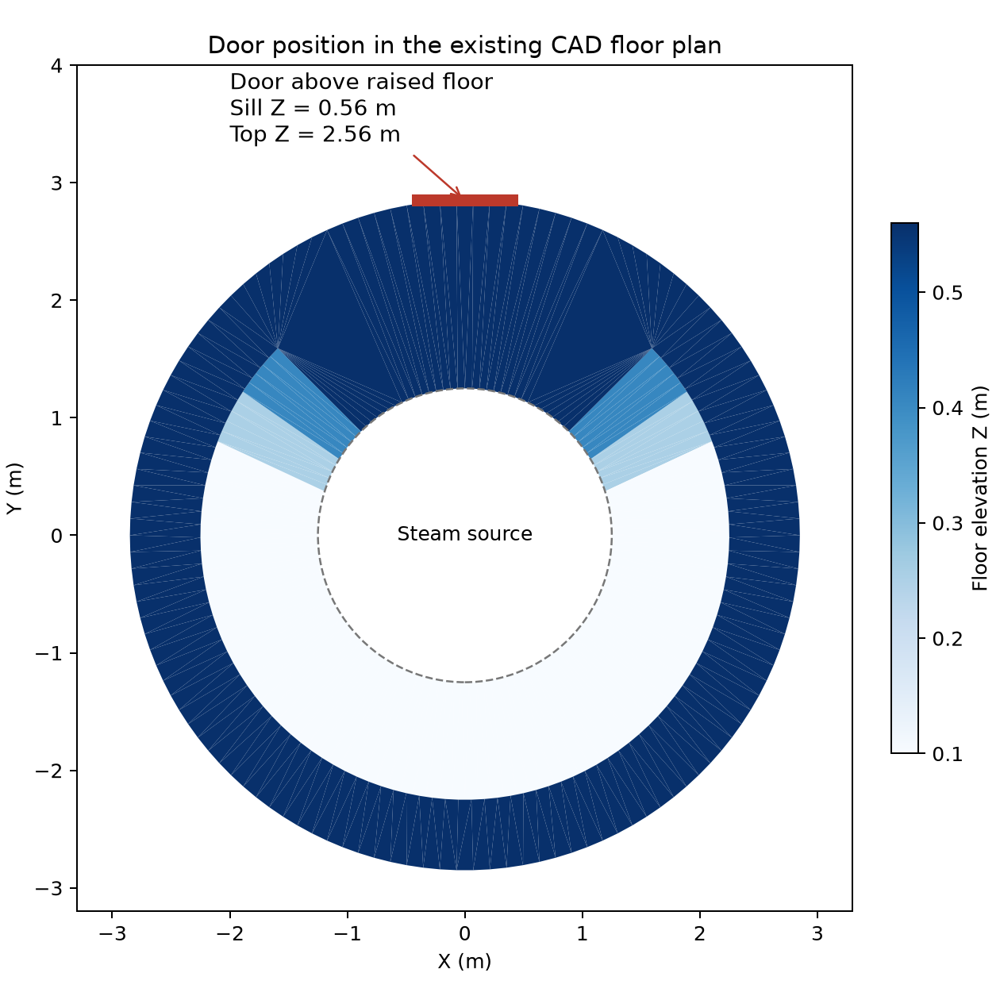
Tracking inflow and outflow separately
A doorway can admit cold air and release hot air at the same time. I recorded incoming and outgoing flow separately, integrated both volumes over the ten-second test, and calculated the temperature of the outgoing air through the upper half using mass-flow weighting.
The peak recorded upper-door outflow temperature falls from 51.0°C in Case 1 to 44.1°C in Case 2, a reduction of approximately 6.9°C. The volume escaping through the door increases from 1.26 to 2.02 m³ over the same interval. The improvement is cooler outflow; the calculation does not show that hot outflow disappears.
Case 6 again illustrates the limitation of room averages. Its mean falls to 29.78°C after opening, while its peak recorded upper-door outflow temperature remains 47.2°C. A cold lower room can coexist with warm air leaving near the top of the door.
Scroll horizontally to see every column.
| Case | Room before (°C) | Room after (°C) | Air in (m³) | Air out (m³) | Peak upper outflow (°C) |
|---|---|---|---|---|---|
| 1 | 47.50 | 39.38 | 16.46 | 1.26 | 51.0 |
| 2 | 43.55 | 38.83 | 14.05 | 2.02 | 44.1 |
| 3 | 48.12 | 42.33 | 15.82 | 2.02 | 48.9 |
| 4 | 43.57 | 38.89 | 13.91 | 2.07 | 44.3 |
| 5 | 43.97 | 39.13 | 14.54 | 1.84 | 44.3 |
| 6 | 35.78 | 29.78 | 13.41 | 0.70 | 47.2 |
Inflow and outflow are integrated volumes through the whole doorway. The last column is the highest recorded mass-flow-weighted temperature of outward flow through the upper half, not a maximum local cell temperature.

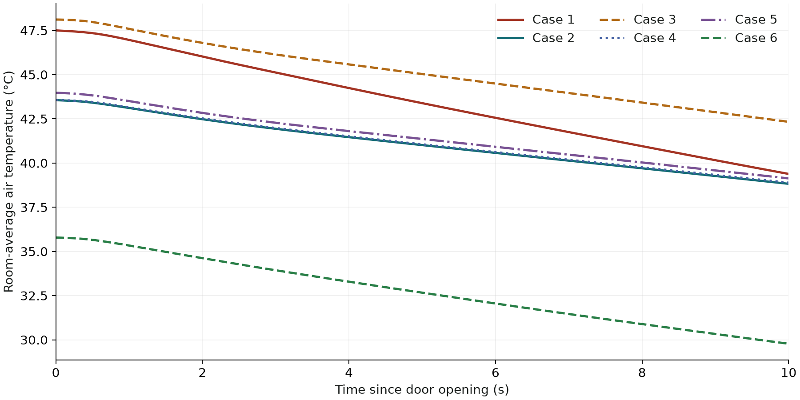

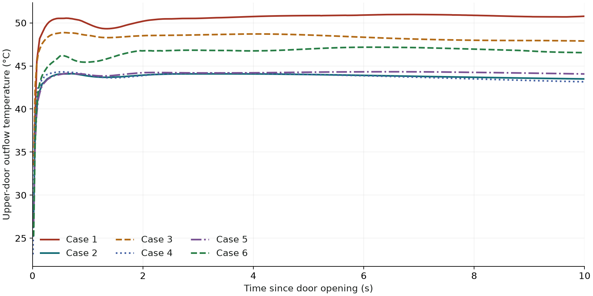
What this test represents
The door is represented as an instantaneously opened boundary and remains fully open for the test. Door-leaf motion, the passage through the wall thickness, the exterior plume, and visitors are not included. The study does not simulate closing, repeated openings, or reheating after closure.
The room’s temperature change includes both the opening and the model’s continuing thermal evolution. There is no matching ten-second extension with the door closed, so the full temperature drop cannot be assigned to the door alone. The roof and side vents remain other routes for airflow, which is why incoming and outgoing doorway volumes do not balance by themselves.
08 / Longer thermal response
Thirty-minute run
Case 2 also has a thirty-minute closed-door simulation. I used it to examine whether the temperature continued to change after the five-minute comparison and whether the more even vertical profile persisted.
The room average rises from 43.55°C at five minutes to 45.20°C at thirty minutes. That 1.65°C increase means the earlier value would understate the temperature at the end of the longer run. The rise slows to approximately 0.14°C over the final five minutes, but that alone does not establish full thermal equilibrium of the air and concrete.
The thirty-minute profile remains comparatively even through most of the room. It does not develop the sharp separation between a cold lower region and a hot upper region seen in Case 6. This supports the recommendation while keeping the longer-term temperature evolution visible.

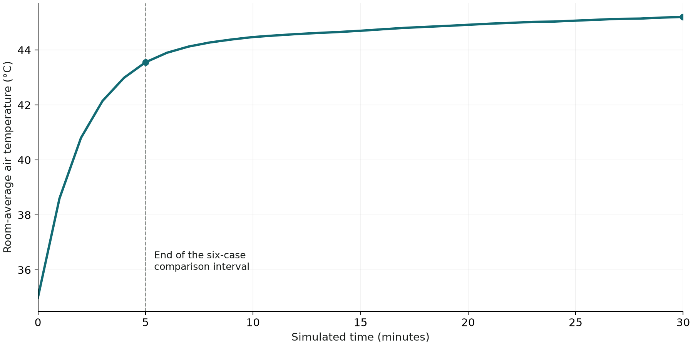

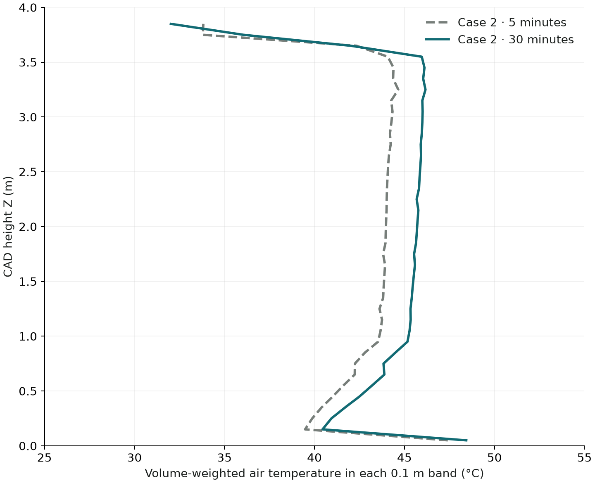
Scroll horizontally to see every column.
| Time (minutes) | 5 | 10 | 15 | 20 | 25 | 30 |
|---|---|---|---|---|---|---|
| Room average (°C) | 43.55 | 44.47 | 44.70 | 44.92 | 45.07 | 45.20 |
Only Case 2 is compared over thirty minutes. Its door-opening test starts from the five-minute state and was not repeated from the thirty-minute state.
09 / Engineering outcome
Recommendation
I recommended removing the central cylinder and adding three 200 mm side vents centred at Z = 0.80 m, while retaining the free roof opening. Case 2 combines a more uniform height profile with a lower five-minute room average and cooler upper-door outflow than the existing arrangement.
The comparison did not support adding the extraction fan under the modeled conditions. Retaining the cylinder with new vents produced a colder average but a less even room, so I did not recommend Case 6 as an intermediate arrangement. The higher vents also showed no clear benefit over the low-level design.
The engineering outcome is a recommendation supported by CAD, field observations, and numerical comparisons. The study does not establish the performance of an installed modification. A follow-up would measure temperature at the same series of heights before and after changes, alongside outdoor conditions, steam production, occupancy, and door use.
Verification and interpretation
All six closed-door cases and all six door-opening cases reached their required end times and passed the recorded final checks. Door-test audits checked the transferred air mass, concrete thermal state, and saved restart data. Recomputed room averages agreed with solver logging within 0.000001°C, and all 480 height-band entries across six cases and two door states were checked for volume weighting and coverage.
Those checks establish consistency in the saved results and their processing. They do not substitute for a mesh-convergence study or validation against measurements. The steam rate and external heat-transfer coefficient are unmeasured assumptions, the concrete and condensation models are simplified, and local supersaturation can occur.
The thermal images support the observed stratification and doorway problem, but the model was not quantitatively calibrated to them. I therefore use the numerical results to compare the design options under defined conditions, with the room profile and doorway behaviour considered together.
Project work
From observation to a design decision
- Site investigation and thermal-image documentation of the existing steam bath.
- CAD preparation for the shell, cylinder, vents, and fluid-domain boundaries.
- Custom steam, condensation, and concrete thermal modeling in OpenFOAM.
- A matched six-design study, six door transients, and a longer thermal run.
- Reproducible result processing, numerical checks, and an engineering recommendation.
Based on the 14 October 2026 engineering report, Steam Bath Ventilation and Heat Distribution, and its archived CAD, simulation outputs, and verification files. CAD views are rendered from the final STEP solids; English charts use the saved numerical results. Thermal photographs are preserved from the project records. CFD section figures use the same saved fields, section planes, and temperature scales, with English labels.